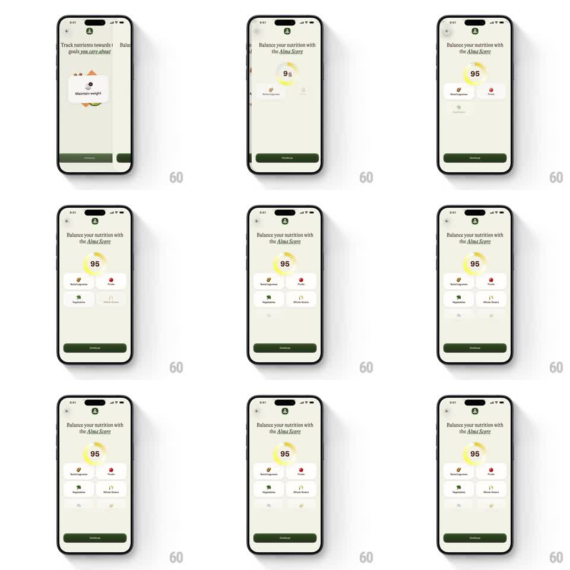

Media
Frame-by-frame

Rebuild this animation 1:1: Alma's score reveal - the "Balance your nutrition with the Alma Score" screen enters with a circular progress ring drawing itself around the number 95 while nutrient cards (Nuts/Legumes, Fruits, Vegetables, Whole Grains) cascade in below.

Rebuild this animation 1:1: Alma's score reveal - the "Balance your nutrition with the Alma Score" screen enters with a circular progress ring drawing itself around the number 95 while nutrient cards (Nuts/Legumes, Fruits, Vegetables, Whole Grains) cascade in below. ## Integration Integration: stack-agnostic spec - springs given as stiffness/damping, timed motions as duration + curve; map every value to your framework and animation library of choice. ## Scene Cream onboarding screen: back chevron, serif headline "Balance your nutrition with the Alma Score" (Alma Score in italic), a large circular progress ring (yellow gradient arc) with "95" centered, then a 2x2 grid of white nutrient cards with small icons and labels, a faint extra row peeking below, and a dark Continue button. ## Motion spec Pattern: ring draw + cascading card reveal, ~1.6s. - Ring: the arc sweeps clockwise from 0 to its value (900ms, ease-out) while the number counts 0 -> 95 (900ms, ease-out, tabular digits); the ring has a soft glow that fades in with the arc. - Cards: the 2x2 grid cards cascade in (translateY 16px -> 0 + fade, 300ms each, 90ms stagger, top-left first) after the ring starts (~400ms in). - Peek: a third row of ghosted cards slides up slightly at the bottom edge (250ms) to imply more content. - Continue: fades in last (200ms). ## Calibration - The count and the arc stay in sync - the number hits 95 as the arc completes. - Cards are white with a hairline border and small colored icons; no shadows. ## Reduced motion Ring, number, and cards appear with a single 250ms cross-fade. ## Don't miss - The arc is a warm yellow gradient, not a flat stroke. - The headline italicizes only "Alma Score" - keep the serif mix.